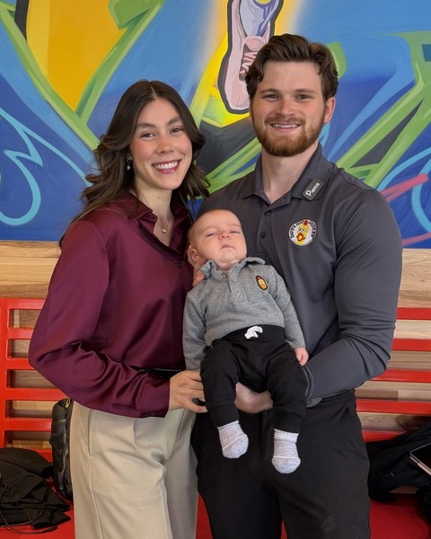

Pierce Gorman
Third-generation franchiseeDHC of KansasHost of Restaurant Excellence
Pierce Gorman is a third-generation franchisee with DHC of Kansas, a family-owned Dave's Hot Chicken franchise group. His family's franchising story spans 42 years — it began when his grandparents moved from Michigan with four kids to open a Little Caesars in San Antonio.
Pierce's mission is to glorify God by creating innumerable opportunities for his team, and he plans to do that by becoming the best franchisee and restaurant operator in the world. He hosts the Restaurant Excellence podcast — an open diary of what he's learning along the way.
He lives in Kansas with his wife, Hannah, and their son.